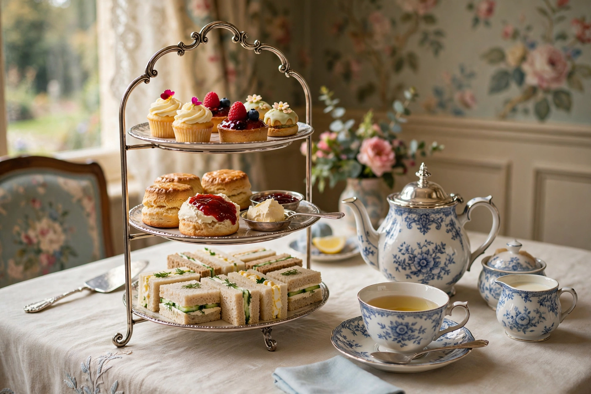

| Afternoon tea | |
 | |
| Type | Light meal |
|---|---|
| Place of origin | England, United Kingdom |
| Created | c. 1840s, credited to Anna Russell, Duchess of Bedford |
| Serving | Typically mid-afternoon (3–5 p.m.) |
| Main components | Tea, finger sandwiches, scones with clotted cream and jam, cakes and pastries |
Afternoon tea is a traditional light meal in Britain, typically eaten in the mid-afternoon, consisting of tea served with finger sandwiches, scones with clotted cream and jam, and an assortment of cakes and pastries, often presented on a tiered stand. It developed in the nineteenth century as a social occasion among the British upper classes and remains a celebrated ritual, served in hotels, tea rooms, and homes in Britain and throughout the Commonwealth and beyond.
Tea drinking was popularized in England from the 1660s, but the afternoon meal itself is traditionally credited to Anna Russell, Duchess of Bedford, in the early 1840s. With dinner in fashionable households not served until eight or nine in the evening, the Duchess is said to have requested tea, bread and butter, and cake in her rooms in the afternoon to stave off a "sinking feeling," and to have begun inviting friends to join her. The practice spread through aristocratic and middle-class society, becoming by the later Victorian era an elaborate social ritual with its own dress codes, etiquette, and equipment; commercial tea rooms flourished from the 1880s.
A classic afternoon tea proceeds from savoury to sweet:
Afternoon tea was historically also called "low tea," from the low drawing-room tables at which it was taken, as opposed to high tea — a heartier early-evening meal of the working classes and the north of England, eaten at a high dining table and including hot dishes, meats, and bread; the modern use of "high tea" to mean a luxurious afternoon tea is a common error. A cream tea is a simpler affair: tea with scones, clotted cream, and jam, emblematic of Devon and Cornwall. Hotels today often serve "champagne afternoon tea," adding a glass of sparkling wine.
While daily afternoon tea declined in the twentieth century, it survives and has revived as an occasion food: London hotels such as the Ritz, Claridge's, and Fortnum & Mason serve formal afternoon teas that are booked weeks ahead, and the ritual is exported worldwide, adapted to local tastes. Themed, vegan, and children's versions are common. The meal remains gently rule-bound — how to hold the cup, stir the tea, and dress a scone all attract strong opinions — which is part of its enduring cultural charm.
See also: Tea in the United Kingdom, Scone, Clotted cream, Anna Russell, Duchess of Bedford, Jaffa Cakes